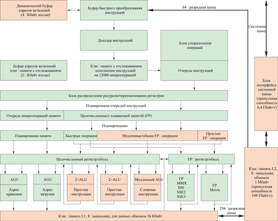
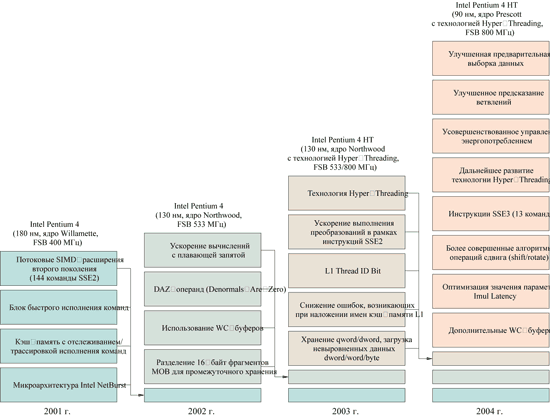

Олег Денисов, Константин Яковлев
Разделение труда на рынке процессоров архитектуры x86 окончательно оформилось в виде законченных продуктовых линеек, предлагаемых двумя ведущими поставщиками этих высокотехнологичных продуктов. Досконально изучив корзину потребительского спроса, AMD и Intel сегодня в состоянии предложить изделия, изначально востребованные в приоритетном для каждой из них сегменте рынка. Такой расклад сил дает возможность обеим компаниям, с одной стороны, наладить устойчивый сбыт текущих моделей, а с другой - сконцентрировать собственные усилия на будущих НИОКР в рамках уже сформированных проектов.
Для каждого из четырех сегментов рынка ПК (в нашем случае это бюджетные модели начального уровня, базовые конфигурации для рынка SOHO и корпоративных пользователей, компьютеры класса high-end и, наконец, специализированные высокопроизводительные рабочие станции) и у AMD, и у Intel есть вполне адекватные решения, отвечающие чаяниям клиентов (табл. 1). Настольные ПК экономкласса без лишних затрат собираются на базе Intel Celeron (ядро Northwood) или AMD Athlon XP (ядро Barton). Для машин уровня mainstream или high-end не составит особого труда подобрать соответствующие типовым задачам тактовые частоты процессоров Athlon 64 (ядро Newcastle или Clawhammer) или Pentium 4 (ядро Northwood или Prescott), а сверхмощные ультрасовременные системы, занятые обработкой цифрового контента, мультимедийные ПК или станции САПР лучше спроектировать на базе Pentium 4 EE (ядро Northwood) или Athlon 64 (серия FX, ядро Sledgehammer).
Примечательно, что обе компании, предлагая новые продукты, уже на стадии ТЗ стараются придерживаться практически идентичных принципов, которые можно свести к общеизвестным постулатам: гибкость (в первую очередь в части адаптации технологий к ресурсам имеющегося программно-аппаратного обеспечения), защита инвестиций, производительность, стандартизация и унификация внедряемых решений. Все это неудивительно, если принять во внимание объективно существующий механизм формирования цен на системы различного уровня, основу которых составляют процессор, системная плата (НМС в комплекте с базовыми сервисами) и модули ОЗУ. Какими бы рейтингами ни руководствовались обе компании, маркируя собственные изделия, отпускные цены на близкие по производительности кристаллы (в партиях от 1 тыс. штук) сегодня - и, по всей видимости, в дальнейшем - будут приблизительно одинаковыми (табл. 2, 3).
Таблица 2. Розничные цены на процессоры AMD для настольных ПК
| Модель | Ядро | Цена, долл. |
| Athlon FX-53 | Sledgehammer | 795 |
| Athlon FX-51 | Sledgehammer | 761 |
| Athlon 64 3400+ | Clawhammer | 474 |
| Athlon 64 3200+ | Newcastle | 322 |
| Athlon 64 3000+ | Newcastle | 254 |
| Athlon XP 3200+ | Barton | 233 |
| Athlon XP 3000+ | Barton | 185 |
| Athlon XP 2800+ | Barton | 130 |
| Примечание: упаковка Retail Box, цена по состоянию на апрель 2004 г. | ||
Таблица 3. Розничные цены на процессоры Intel для настольных ПК
| Модель | Ядро | Цена, долл. |
| Pentium 4 Extreme Edition 3,4 ГГц | Northwood | 999* |
| Pentium 4 Extreme Edition 3,2 ГГц | Northwood | 940 |
| Pentium 4 3,2 ГГц | Prescott | 285 |
| Pentium 4 3,4 ГГц | Northwood | 440 |
| Pentium 4 3,2 ГГц | Northwood | 283 |
| Pentium 4 3,0 ГГц | Northwood | 225 |
| Pentium 4 3,06 ГГц (FSB 533 МГц) | Northwood | 224 |
| Celeron 2,8 ГГц | Northwood | 123 |
| Примечание: упаковка Retail Box, цена по состоянию на апрель
2004 г. *Оптовая цена (партия от 1000 шт., данные Intel). |
||
Похоже, сложившийся паритет устраивает и Intel, и AMD, если говорить о сегменте настольных ПК, где компаниям принадлежит 97% мирового рынка (78% у Intel и 19% у AMD, по данным IDC по состоянию на начало I кв. 2004 г. ). Конечно, на том же рынке присутствуют и иные компании, предлагающие альтернативные решения, однако сколько-нибудь серьезной конкуренции с их стороны, если взглянуть на календарь грядущих анонсов новых процессоров (см. врезку "Ретроспектива и планы выпуска процессоров..."), ожидать не приходится. Что же касается мобильных технологий и решений для серверов, здесь ситуация совершенно иная, и именно на этом фронте в ближайшем будущем следует ожидать "больших маневров".
Ретроспектива и планы выпуска процессоров ведущими производителями (2003-2006 гг.)
| ||||||||||||||||||||||||||||||||||||||||||||||||||||||||||||||||||||||||||||||||||||||||||||||||||||||||||||||||||||||||||||||||||
Intel Pentium 4 Extreme Edition
Выпустив модель Pentium 4 Extreme Edition, компания Intel, пожалуй, впервые за всю историю анонсов своих процессоров недвусмысленно дала понять, кому именно адресован новый кристалл. На сей раз целевой аудиторией стала армия поклонников компьютерных игр, и только вслед за ней в непривычно коротком перечне значились пользователи, которым требуются мощные вычислительные ресурсы. Оценив ситуацию на рынке ПК, Intel, по сути, косвенно признала тот факт, что инновации, коими корпорация в достатке наделяет свои устройства, востребованы в первую очередь игровым сообществом. Год от года растут аппетиты тех, кто проводит львиную долю своего свободного времени за машиной на пределе возможностей железных и человеческих. Высококачественные текстуры невероятных доселе объемов, реалистичные анимированные персонажи и объемные натуралистичные 3D-сцены, высококачественный 24-разрядный позиционированный звук и генерируемые в реальном времени случайные ландшафты - все это предполагает наличие в системе устройства, которому окажутся по силам самые серьезные задачи. По версии Intel, сегодня в этой роли выступают Pentium 4 EE с тактовыми частотами 3,2 и 3,4 ГГц.
Кристаллы выполнены с соблюдением 0,13-мкм проектных норм на базе микроархитектуры Intel NetBurst. Площадь ядра (кодовое наименование Northwood) у Extreme Edition составляет 237 мм2. Плотность размещения транзисторов достигла величины 750 тыс. единиц/мм2, а их общее количество на кристалле - 178 млн. Учитывая задачи, которые предстоит решать этим процессорам, инженеры Intel, оставив объем кэш-памяти L2 таким же, как и у ядра Northwood, оснастили процессор внушительным кэшем 3-го уровня объемом 2 Мбайт. Кэширование данных поручено 8-Кбайт памяти L1, для ускоренного выполнения типовых операций предназначена кэш-память инструкций (Execution Trace Cache способен отслеживать выполнение до 12 тыс. декодированных микроопераций), а за распределение нагрузки при обработке сразу нескольких потоков совместно с ОС и оптимизированными приложениями, как и у предшественников, отвечает Hyper-Threading.
Проанализировав результаты испытаний, отметим, что Pentium 4 EE достаточно уверенно лидирует в задачах, для которых, собственно, он и был спроектирован. В играх, синтетических 3D-тестах, пакетах анализа интегральной производительности системы и ее составляющих и в приложениях, оптимизированных под инструкции MMX/SSE/SSE2 (в нашем случае это рендеринг аудио- и видеопотоков в реальном времени), процессору не составило особого труда обогнать основного конкурента - Athlon 64 FX. Если говорить о типовых офисных приложениях, "чистых" научных задачах (расширенные инструкции микрокоманд отключены) с множеством инвариантных решений, операциях преобразования массивов данных без оптимизации вычислений, то достаточно длинный конвейер процессора, перебирая возможные ветвления, в случае неудачного прогноза может сбрасывать все содержимое регистров, вынуждая процессор вернуться к "точке отсчета" и заново подыскивая оптимальный алгоритм. Это предположение наглядно иллюстрируют тесты ZD Business Winstone 2004 и ZD Content Creation Winstone 2004, в которых разница в результатах по сравнению с оппонентом составила около 10% - не в пользу продукции Intel. Спешим оговориться, что в подавляющем большинстве случаев пользователи не заметят сколько-нибудь серьезного замедления работы своих ПК в офисных пакетах, Интернет-приложениях, при архивировании данных или их проверки на наличие вирусов. Производительности, которую демонстрируют Pentium 4 EE, более чем достаточно для решения подобных задач.
Как мы тестировалиТестирование процессоров для настольных ПК предусматривало несколько этапов. Вначале система проходила цикл испытаний с применением специализированных синтетических тестов и фирменных тестов PC Magazine, а затем оценивалось быстродействие процессора на реальных приложениях. В первую группу вошли тесты производительности ЦП и ОЗУ из пакетов Sandra 2004 Standard (сборка 2.9.104), Sandra 2004 Professional Unicode (Win32 x86) и (Win64 AMD64), сборка 10.9.89) компании SiSoftware, а также тесты дисковой и видеоподсистем (2D-графика) из пакета PC Magazine WinBench 99 2.0. Два известных тестовых пакета PCMark2004 и 3DMark03 (сборки 1.1.0 и 3.4.0 соответственно) компании Futuremark позволили определить потенциал ЦП, ОЗУ и выставить интегральную оценку производительности системы в 2D/3D-приложениях под управлением API DirectX 9.0b (экранное разрешение 1024x768, 32-разрядная глубина цвета, параметр вертикальной синхронизации Vsync=Auto). Поведение системы при выполнении типовых офисных приложений и задач формирования Web-контента, а также устойчивость системы при работе в мультизадачной среде исследовали с помощью пакетов PC Magazine Business Winstone 2004 1.01 и Multimedia Content Creation Winstone 2004 1.0 - фирменного набора тестов лаборатории журнала PC Magazine, разработанного ею в сотрудничестве с компанией VeriTest. Вторая группа тестов была представлена реальными задачами, с которыми сталкиваются процессоры в повседневной жизни. Работа с архивами, преобразование аудио- и видеопотоков в реальном времени, решение научных задач и изощренные 3D-тесты на базе реально существующих игр - все это позволило получить развернутую картину сильных и слабых сторон каждого процессора. Для начала тестируемые образцы средствами кодека LAME 3.95.1 должны были преобразовать звуковой файл формата WAV в файл MP3; таким образом оценивалась эффективность работы встроенных наборов инструкций MMX, SSE, SSE2 и 3DNow!. Архиватор WinRAR 3.30 помог нам измерить быстродействие процессора на операциях сжатия файлов (заранее подготовленный массив данных объемом 100 Мбайт, 556 файлов в 123 каталогах). Скорость преобразования потока видеоданных определялась с помощью сразу нескольких распространенных приложений. Задача преобразования файла MPEG2 длительностью 3 мин и объемом 102 Мбайт в видеоролик формата DivX выполнялась кодеками из состава пакетов MPEG Mediator 1.5 и XMPEG 5.0.3 (сборка 5.0.8.84), оптимизированными под наборы инструкций MMX и SSE2/SSE3 iDCT соответственно. Для кодирования видеопотока, загружаемого в компьютер с цифровой видеокамеры (в нашем случае файл DV RAW объемом 651 Мбайт), в файл MPEG2 мы использовали ПО Canopus ProCoder 1.5 и MainConcept 1.4.1 (распознает инструкции SSE3), а мощный инструмент для создания DVD-контента - DVD Movie Factory 3 компании Ulead Systems подготовил к рендерингу и записал на жесткий диск видеоряд из исходного файла MPEG2. Один из вариантов применения процессора для решения научных задач мы смоделировали на системе нелинейных дифференциальных уравнений (реальная расчетная задача из области квантовой механики, написанная на языке Fortran-77 и оперирующая в основном вещественными числами двойной точности; исполняемый код скомпилирован средствами пакета Compaq Visual Fortran 6.6 со следующими настройками: генерация кода под архитектуру x86, установки по умолчанию, расширенные наборы инструкций не используются). И, наконец, тест The Threat Rolling Demo (экранное разрешение 1024x768, 32-разрядная глубина цвета, остальные установки по умолчанию), созданный на базе космического симулятора X2 компании EgoSoft, позволил определить общую производительность системы в играх с высокими требованиями к тандему процессор - ОЗУ и видеоподсистеме. Для процессоров Intel, оснащенных функцией Hyper-Threading, дополнительно были проведены испытания на скорость выполнения стандартных офисных приложений в одно- и многозадачных режимах и детально исследован реальный эффект от применения SSE/SSE2/SSE3-инструкций при многократном выполнении цикла элементарных вычислительных операций и при решении системы нелинейных дифференциальных уравнений. Тесты проводились под управлением ОС Windows XP Professional SP1 (сборка 2600, файловая система NTFS), установленной на жестком диске Seagate Barracuda ATA V ST3120023A емкостью 120 Гбайт. Для оценки производительности 64-разрядных процессоров AMD параллельно была установлена ОС Windows XP 64-bit Edition SP1 version 2003 (сборка 3790, обновление SP1 версии 1069, файловая система NTFS). Для каждой системной платы с сайта производителя загружалась последняя версия BIOS с последующим обновлением микрокода, подключались "свежие" драйверы для соответствующих наборов системной логики, драйвер графической платы Nvidia Detonator 53.04 и библиотека API DirectX 9.0b. Для компиляции исполняемого кода применяли средства Intel C++ Compiler 5.0.1, Intel Fortran Compiler 5.0.1 и Compaq Visual Fortran 6.6. Выбирая стендовое оборудование для финальных тестов на основе предварительных результатов, мы остановили свой выбор на "родных" для процессоров Intel НМС i875P (Canterwood), i865PE (Springdale) и i848P и наборах nForce3 Pro 150, nForce3 150 и nForce2 Ultra400 компании Nvidia для процессоров AMD. Таким образом, в соответствии с порядком перечисления НМС, все измерения для процессоров Intel проводились на платформах Albatron PX875P Pro (PCB rev. 1.0, версия BIOS R1.05, установки BIOS Setup по умолчанию), ASUS P4P800 SE (PCB rev. 2.0, версия BIOS 1001, установки BIOS Setup по умолчанию) и ASUS P4P800S-E Deluxe (PCB rev. 1.01, версия BIOS 1005, установки BIOS Setup по умолчанию). В качестве платформ для процессоров AMD использовались системные платы ASUS SK8N (PCB rev. 1.03, версия BIOS 1004, установки BIOS Setup по умолчанию), Gigabyte GA-K8NNXP (PCB rev. 1.0, версия BIOS F12, установки BIOS Setup - Optimized Defaults) и Albatron KM18G Pro (PCB rev. 1.0, версия BIOS R1.0, установки BIOS Setup - Turbo Settings). Во все системы на базе процессоров Intel и AMD Athlon XP устанавливались два модуля ОЗУ PC3200 DDR SDRAM объемом 512 Мбайт каждый производства компании OCZ (латентность сигнала CAS - 2, тайминг 2-3-3-6). Для тестирования Athlon 64 и Athlon 64 FX применялись рекомендованные AMD модули ОЗУ 88S6HDAR-1TDG, предоставленные компанией Legacy Electronics (2x512 Мбайт PC3200 DDR SDRAM ECC; латентность CAS - 2,5, тайминг 2,5-3-3-8). Во всех случаях видеоподсистема была представлена графическим адаптером на базе процессора Nvidia GeForceFX 5700 Ultra c объемом видеопамяти 128 Мбайт. Заявленные производителями значения основных характеристик процессоров, ОЗУ и системных плат сверялись с реальными с помощью утилиты диагностики CPU Z (текущая версия 1.21 доступна для загрузки по адресу http://www.cpuid.com). Перечень процессоров, прошедших испытания, выглядит следующим образом: AMD Athlon 64 FX-53 и FX-51; AMD Athlon 64 3400+ ClawHammer; AMD Athlon 64 3000+ NewСastle; AMD Athlon XP 2800+ и 3200+, Intel Pentium 4 Extreme Edition 3,2 и 3,4 ГГц; Intel Pentium 4 Prescott 3,2 ГГц; Intel Pentium 4 Northwood 3,0 и 3,2 ГГц; Intel Pentium 4 Northwood 3,06 ГГц; Intel Celeron 4 2,8 ГГц (характеристики этих моделей приведены в табл. 1). Подробные результаты тестирования можно найти здесь. |
Intel Pentium 4 (Prescott)

Верная своему слову, корпорация Intel в объявленные ранее сроки представила рынку новое ядро, изготовленное с соблюдением 90-нм проектных норм. Prescott (рис. 1) стал первым в индустрии кристаллом для настольных ПК, который был спроектирован с учетом грядущего тотального перехода в производстве кремниевых пластин на новый технологический процесс. При изготовлении подложки (групповая заготовка диаметром 300 мм, площадь ядра кристалла - 112 мм2, количество транзисторов - 125 млн) разработчики применили технологию так называемого напряженного кремния (Strained Silicon) и новый тип диэлектрика CDO с низким диэлектрическим коэффициентом (табл. 4). Эти меры позволили, с одной стороны, уменьшить длину затвора транзисторов до 50 нм (против 70 нм у аналогичных ячеек ядра Northwood), а с другой - "растянутая" кремниевая решетка образовала разреженное пространство, ускоряя поток электронов внутри собственной "упаковки", что в конечном счете самым благотворным образом сказалось на общем быстродействии процессора.
|  |
| Рис. 1. Блок-схема P4 Prescott.
|
Таблица 4. Сравнительные характеристики технологических процессов производства кремниевых пластин для процессоров Intel
| Проектная норма технологического процесса | 130 нм | 90 нм |
| Число слоев медных соединений | 6 | 7 |
| Применяемый диэлектрик | SIOF с низким диэлектрическим коэффициентом | CDO с низким диэлектрическим коэффициентом |
| Материал поликремниевого затвора | Силицид кобальта | Силицид никеля* |
| Длина затвора транзистора, нм | 70 | 50 |
| Площадь ячейки памяти SRAM, мкм2 | 2 | 1,15 |
| Проектная норма фотолитографического процесса, нм | 248 | 193 |
| Диаметр подложки (групповая заготовка), мм | 200 | 300 |
| Материал подложки | Обычный кремний | Напряженный кремний |
| * Выбор материала обусловлен необходимостью снизить ток утечки. | ||
Рискнем предположить, что по части инноваций новое ядро может смело претендовать на титул самого ожидаемого технологического решения 2004 г. Выполненный на базе усовершенствованной архитектуры NetBurst, процессор получил 13 новых инструкций (в терминах Intel SSE3) и увеличенную (до 16 Кбайт и 1 Мбайт соответственно) кэш-память L1 и L2. Говоря о потоковых SIMD-расширениях следующего поколения, необходимо отметить, что все они призваны ускорить выполнение мультимедийных и игровых приложений. Согласно официальной информации Intel, новые инструкции обслуживают пять групп задач:
- преобразование чисел с плавающей запятой в целочисленный формат;
- операции над комплексными числами;
- кодирование видеопотоков;
- операции с плавающей запятой с использованием формата AOS;
- синхронизация потоков.
Таким образом, с появлением SSE3 общее число инструкций применительно к NetBurst возросло до 227. В целом же эволюция этой микроархитектуры, впервые реализованной в процессорах Xeon и Pentium 4, показана на рис. 2 - мы полагаем, что ее славные вехи вполне заслуживают упоминания в данном обзоре.
|  |
| Рис. 2. Эволюция микроархитектуры Intel NetBurst.
|
Очередной модификации подверглось в Prescott и встроенное фирменное средство обработки данных в несколько потоков - функция Hyper-Threading. Приняты меры к снижению энергопотребления и стабилизации температурных режимов работы процессора при выполнении задач в среде наиболее критичных приложений. Согласно новой спецификации теплового профиля, для которой определены параметры различных уровней рассеивания энергии Tcontrol и Tcasemax внутри единой системы процессор - радиатор - корпус ПК, при проектировании системных плат и корпусов (в скором времени следует ожидать и давно назревших изменений в спецификации ATX) постепенно будет внедряться технология сквозного мониторинга температурных режимов в самых ответственных зонах (гнездо и корпус процессора, блок преобразования напряжений питания процессора, микросхема северного моста, разъемы модулей ОЗУ, блок питания ATX).
Но самые совершенные инновации останутся невостребованными, если цена на продукт окажется непомерно завышенной. Скажем сразу, что в этом плане проблем с реализацией Prescott у Intel быть не должно. Благодаря принятым заранее мерам выход годных изделий на трех заводах, производящих кремниевые пластины, в короткие сроки удалось вывести на типовой для индустрии уровень. Сегодня себестоимость изготовления кристалла Prescott лишь немного отличается от того же показателя для предшественника, выпускаемого по традиционной 130-мкм технологии (ядро Northwood).
А теперь самое время обратиться к результатам тестов. На фоне уже традиционного незначительного отставания Prescott от аналогичного по производительности Athlon 64 при выполнении бизнес-приложений процессор Intel достаточно уверенно (с полуторакратным опережением) обошел конкурента в синтетических тестах от SiSoftware и Futuremark, очень неплохо справился с задачей преобразования цифрового контента средствами Canopus ProCoder, MainConcept и Ulead DVD MovieFactory (разница в скорости выполнения операций составляла от 15 до 45%). Ничуть не хуже выглядят его показатели по итогам тестов на сжатие аудио- и видеопотоков с помощью LAME, MPEG Mediator и XMPEG (разброс результатов не превышал 12%). Практически одинаковы (в пределах погрешности измерений) у них с соперником результаты при архивировании данных. И лишь заметное - в 3,5 раза - отставание Prescott от Athlon 64 при решении системы нелинейного дифференциального уравнения может подпортить общую картину от первого знакомства с этим кристаллом… кому угодно, но только не нам. Примечательно, что на этой задаче Prescott довольно уверенно опередил оба процессора Extreme Edition, принимавших участие в тестировании. Новый Pentium 4 с тактовой частотой 3,2 ГГц и увеличенным кэшем 2-го уровня в связке с любым из НМС от Intel демонстрировал едва ли не образец устойчивой и сбалансированной платформы, способной решать самые сложные задачи, не выходя при этом за рамки отведенного для машин класса mainstream/high-end бюджета.
Intel Pentium 4 (Northwood)
Великое множество вариантов исполнения кристаллов на базе ядра Northwood открывает Intel широкие возможности для маневра на необъятном поле "персоналок", начиная от недорогих и экономичных машин для корпоративного рынка и заканчивая высокопроизводительными мультимедийными и рабочими станциями верхнего ценового уровня. Сегодня в прайс-листах компьютерных салонов можно обнаружить не менее дюжины позиций - от скромных 2-ГГц моделей, рассчитанных на системную шину FSB 400 МГц, до мощных 3,4-ГГц кристаллов для FSB 800 МГц, - у которых в графе "ядро" будет фигурировать хорошо зарекомендовавший себя брэнд Northwood.
Учитывая скорректированные Intel планы позиционирования этого семейства на ближайшую перспективу, мы не станем в подробностях останавливаться на технических характеристиках процессора (благо в предыдущей статье о тестировании процессоров для настольных ПК, см. "BYTE/Россия" № 4'2003, Pentium 4 было уделено достаточно много внимания), а сразу перейдем к результатам, продемонстрированным тремя моделями с торговой маркой Pentium 4. Признаемся, мы не сразу определили равнозначных по характеристикам оппонентов этим кристаллам. В нижнем ценовом диапазоне - как, впрочем, и в нашем внутреннем рейтинге производительности - Pentium 4 соревнуется с основным в недавнем прошлом конкурентом - процессором Athlon XP. Топовые модели с тактовыми частотами от 2,8 до 3,4 ГГц совсем неплохо выглядят даже на фоне 64-разрядных Athlon 64.
Принимая во внимание мощную поддержку, оказанную семейству процессоров Pentium 4 ведущими производителями НМС (включая ATI, представившую достаточно перспективный набор системной логики с интегрированной графикой на базе Radeon), у пользователей сегодня есть все шансы выбрать именно тот комплект базовых компонентов для очередной модернизации ПК, который им по карману.
Напомним также, что сфера применения Pentium 4 не ограничивается настольными компьютерами. До момента выхода коммерческой версии Prescott для ноутбуков (предполагаемые тактовые частоты от 2,8 до 3,2 ГГц) кристалл по-прежнему будет оставаться в поле зрения поставщиков мобильных решений как реальная альтернатива для построения вполне адекватной системы, способной заменить традиционный "десктоп".
Intel Celeron
В настоящее время выпуск процессоров с самой успешной за всю историю Intel торговой маркой полностью переведен на технологический цикл с проектной нормой 0,13 мкм (ядро Northwood). Этот процессор-труженик, безусловно, заслуживает громкого эпитета "народный", которым мы его наградили. А как еще прикажете назвать процессор, переживший не одно поколение куда более мощных собратьев, выдержавший атаки со стороны родственных продуктовых линеек и победивший в противостоянии с достойным оппонентом из стана AMD? Довольствуясь минимальным объемом кэш-памяти L2, он превосходно смотрится на корпоративной ниве, безропотно обслуживая необъятный парк офисных машин. Зачастую это "пламенный мотор" для самого первого в доме персонального компьютера, реже - второй или даже третий не нарушающий спокойствия домочадцев ПК, используемый в качестве "пишущей машинки", и всегда - неутомимый труженик, приобретаемый в подавляющем большинстве случаев на кровные сбережения. Одним словом - народная марка!
Уход со сцены основного в недалеком прошлом конкурента - процессора AMD Duron означает для Celeron только одно. Соревноваться теперь приходится в основном с самим собой, да еще, пожалуй, с Athlon XP соответствующего рейтинга (в этом случае цены на оба процессора практически идентичны), объем кэш-памяти L2 у которого вчетверо превосходит 128 Кбайт, оставшихся Celeron в наследство от модифицированного ядра Pentium 4. К тому же модули ОЗУ DDR SDRAM систем на базе Athlon XP способны работать на частоте 400 МГц, в то время как у ПК на базе Celeron этот показатель не превышает 266 МГц.
Тем не менее при "разборе полетов" выясняется, что фатальной ситуацию с точки зрения производительности никак не назовешь. Процессор лишь ненамного отстает в скорости выполнения преобразований аудиопотоков средствами LAME, превосходя, пусть и незначительно, Athlon XP в операциях над цифровым видеоконтентом. При очень близких результатах, показанных процессорами в синтетических тестах 3DMark03 и PCMark2004, Celeron проигрывает Athlon XP в производительности на дисковых операциях, 2D-графике и рендеринге данных для DVD-диска с помощью ПО от Ulead. Достаточно серьезным выглядит его отставание при выполнении типовых офисных приложений и решении научных задач без оптимизации исходного кода под доступные Celeron инструкции MMX, SSE и SSE2. Не столь оптимистичны и результаты в игровом тесте, где продукт Intel отстал от конкурента в скорости отрисовки сцен на совсем не лишние в таких случая 20 кадр/с. И все же сбрасывать со счетов этот уникальный процессор определенно рановато. Он еще порадует своих поклонников год-другой, с учетом предстоящего вскоре анонса кристалла на базе ядра Prescott с увеличенным до 256 Кбайт объемом кэш-памяти L2, тактовыми частотами от 2,53 до 3,06 ГГц и более скоростной (533 МГц) системной шиной.
AMD Athlon XP
Упорство, с которым AMD поддерживает торговую марку Athlon XP, заставило нас пристальнее взглянуть на ближайшие планы компании в отношении этого ветерана. Согласно нашим данным, коренные изменения затронут архитектуру процессора лишь в конце текущего года. Новое ядро с кодовым наименованием Paris, выполненное с соблюдением проектных норм 0,13 мкм, по замыслу инженеров AMD, будет представлять собой усеченную 32-разрядную версию Athlon 64 с кэш-памятью L2 объемом 256 Кбайт. Параллельно запуску Paris ожидается анонс еще одной версии кристалла, изготовленного по технологии 90 нм (кодовое наименование Victoria). Ближе к середине 2005 г. должен появиться наследник Victoria - процессор с ядром Palermo, характеристики которого пока не разглашаются.
Таким образом, далеко не безоблачные перспективы нынешнего ядра Barton в условиях нарастающего прессинга со стороны основного и пока единственного конкурента могут привести к утрате позиций, которые процессор стойко удерживает вот уже более года. Возможно, AMD совсем скоро придется пересматривать тезис о том, что та или иная модель будет выпускаться столь долго, сколько будет существовать устойчивый спрос на нее со стороны основной массы клиентов. Intel с присущим ей темпераментом "дожимает" корпоративный рынок (равно как и индивидуальных пользователей), предлагая все более заманчивые решения на базе Celeron и параллельно снижая цены на младшие модели Pentium 4. Вполне вероятно, что производители системных плат сочтут нецелесообразным развивать инфраструктуру собственного производства применительно к платформе на базе Socket 462, и тогда ситуация станет и вовсе непредсказуемой. Однако не будем пугать читателя мрачными прогнозами, а обратимся к результатам наших тестов.
Итак, Athlon XP год спустя. Старшие модели кристалла на равных состязаются c 3-ГГц Pentium 4 в скорости выполнения бизнес-задач, представленных в нашем тестировании пакетами ZD Business Winstone 2004 и ZD Content Creation Winstone 2004. При этом не следует забывать, что реальная тактовая частота Athlon XP в полтора раза меньше, чем у конкурента, а выручает его более короткий конвейер. С другой стороны, эти же самые процессоры откровенно неуверенно выступили в задачах преобразования цифровых аудио- и видеопотоков, в синтетических тестах от Futuremark и в большинстве сценариев теста Sandra 2004. По итогам замеров быстродействия при решении научной задачи, в играх и 2D/3D-тестах старшие модели Athlon XP отчасти выправили общую картину, добавив несколько баллов к интегральной оценке производительности, которая тем не менее все равно осталась на уровне младших моделей Pentium 4 и чуть лучшей по сравнению с 2,8 ГГц Celeron. Да здравствуют 64-разрядные процессоры?
AMD Athlon 64/64 FX
В летопись компании AMD золотыми буквами вписаны две даты, "изменившие мир". Одна из этих вех - событие трехлетней давности, когда компания первой среди производителей процессоров преодолела рубеж в 1 ГГц, запустив в серию процессоры с новой торговой маркой Athlon. Вторая, по значимости ничуть не уступающая первой, - анонс 23 сентября 2003 г. первых 64-разрядных процессоров для настольных ПК. В новых кристаллах, ориентированных на рынок высокопроизводительных рабочих станций широкого профиля и мощных игровых компьютеров, традиционная система x86-команд получила 64-разрядные расширения (архитектура AMD64). Специально для них увеличено до 16 и число соответствующих регистров с 64-разрядной адресацией; при этом сами процессоры сохранили на аппаратном уровне полную совместимость с архитектурой x86, гарантируя работу с 32-разрядными приложениями. В обоих процессорах контроллер памяти расположен непосредственно на кристалле, что позволяет организовать полноскоростной дуплексный режим обмена данными для двухканального режима на частотах до 400 МГц. Новая системная шина, в которой реализованы основные преимущества технологии HyperTransport, обеспечивает пропускную способность для операций ввода-вывода на уровне 6,4 Гбайт/с.
Основные различия процессоров Athlon 64 и 64 FX касаются интерфейса шины памяти и объема кэш-памяти L2. Athlon 64 FX (ядро Sledgehammer) оснащен 1-Мбайт кэш-памятью L2 и 128-разрядным интерфейсом памяти (в систему могут устанавливаться регистровые модули DIMM ОЗУ DDR SDARM) с пропускной способностью канала 6,4 Гбайт/с. В то же время Athlon 64, выполненный на ядре Newcastle, довольствуется 512-Кбайт кэшем и 64-разрядным интерфейсом памяти (модули SO-DIMM ОЗУ без буферизации; пропускная способность канала до 3,2 Гбайт/с).
Примечательно, что именно Athlon 64 FX, рассчитанный на аудиторию, не привыкшую экономить деньги в ущерб производительности, заставил Intel поторопиться с выпуском Pentium 4 Extreme Edition - и не без оснований. Как показали наши испытания, в подавляющем большинстве тестов Athlon 64 FX опередил всех ближайших конкурентов, продемонстрировав солидный запас прочности в 32-разрядных приложениях и хороший задел на будущее с точки зрения быстрого перехода на грядущую 64-разрядную ОС компании Microsoft.
Таблица 5. Сравнительные характеристики топ-моделей процессоров AMD и Intel Модель AMD Athlon 64 FX Intel Pentium 4 Extreme Edition Анонс микроархитектуры 2003 г. 2001 г. Разъем/инфраструктура Socket 940 Socket 478 Производственная технология, мкм 0,13 (SOI) 0,13 Число транзисторов, млн шт. 105,9 178 Тактовая частота, ГГц 2,4 3,4 64-разрядные инструкции AMD64 Нет 32-разрядные инструкции Да Да Технология системной шины HyperTransport (полнодуплексная, независимая) Front Side Bus (полудуплексная) Встроенный контроллер памяти DDR (MCT) Да, 128-разрядный интерфейс и 16 разрядов ECC, PC3200/PC 2700/PC 2100/PC1600 Нет, логическое устройство на системной плате (микросхема северного моста) Эффективная скорость обмена данными между процессором и системой HyperTransport: до 6,4 Гбайт/c; FSB 1,6 ГГц; MCT: до 6,4 Гбайт/c; FSB 400 ГГц. Общая скорость обмена данными до 12,8 Гбайт/c До 6,4 Гбайт/c; FSB 800 ГГц Интегрированный северный мост Да, 128-разрядная шина, функционирующая на частоте процессора Нет, логическое устройство на системной плате, 64-разрядный тракт данных FSB 200 ГГц Высокопроизводительная интегрированная кэш-память L1 - 128 Кбайт; L2 - 1024 Кбайт (исключающая архитектура). Общий эффективный объем кэш-памяти 1152 Кбайт L1 - 8 Кбайт; L2 - 512 Кбайт (исключающая архитектура); L3 - 2048 Кбайт (исключающая архитектура). Общий эффективный объем кэш-памяти 2048 Кбайт Мультимедийные инструкции и инструкции для обработки трехмерной графики 3DNow! Professional, MMX, SSE2 MMX, SSE, SSE2 Аппаратная защита от вирусов (совместно с Windows XP SP2) Да Нет
Подведем итоги
Модель Athlon 64 FX-53 практически не имела себе равных в споре за пальму первенства в новой и пока не слишком представительной группе процессоров Ultra High Performance. При близком уровне цен на старшие модели кристаллов от AMD и Intel (в качестве основного конкурента Athlon был выбран Pentium 4 Extreme Edition с тактовой частой 3,4 ГГц, см. табл. 5) мы без колебаний отметили знаком "Выбор редакции" продукт AMD.
Среди процессоров класса mainstream/high-end несомненным лидером оказался недавно запущенный в серию кристалл Intel Pentium 4 (ядро Prescott). Количество и качество исполнения инновационных решений, которые разработчик сумел воплотить в кремнии, заслуживают самого пристального внимания. Процессор одинаково уверенно чувствует себя при выполнении типовых офисных задач, обработке мультимедийных потоков и в играх. Мы пришли к единодушному мнению, что в своей категории процессоров именно он заслуживает знака " Выбор редакции".
Для построения бюджетного ПК более подходящего варианта, чем Intel Celeron с тактовой частотой 2,8 ГГц, мы не нашли. Продемонстрированная кристаллом производительность в сочетании с более чем привлекательной ценой, которую Intel регулярно пересматривает в "правильную" сторону (конец учебного года - совсем неплохой ориентир для очередного обновления прайс-листов), не оставили шансов конкурентам. Титул "Выбор редакции" в своей нише по праву получил именно этот "народный процессор".
Благодарности
Авторы статьи выражают особую признательность компании "Пирит" (http://www.pirit.com, тел. (095) 785-5554, 974-3210) за предоставленное для проведения тестирования оборудование.
Редакция благодарит московское представительство компании AMD (http://www.amd.ru), компании 3Logic (http://www.3logic.ru), Abit Computer (http://www.abit.ru), Albatron Technology (http://www.albatron.ru), ASUSTeK Computer (http://www.asuscom.ru), DFI (http://www.dfi.com.tw), Gigabyte Technology (http://www.gigabyte.ru), MSI (http://www.microstar.ru), NEO Group (http://www.neo.ru), PatriArch (http://www.memory.ru), Sapphire (http://www.sapphiretech.ru), "Тайсу" (http://www.taisu.ru) и "Формоза" (http://www.formoza.ru), принявшие участие в тестировании.